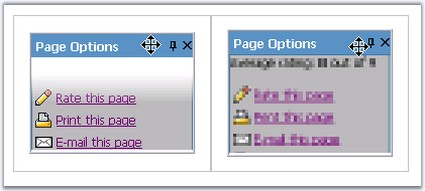

Transition and slide effects can be applied to enhance and provide a rich interface for the snap elements on expand and collapse.
The transition effects can be set for expand and collapse action of a parent item. These effects can be applied just by setting the ExpandTransition and CollapseTransition to one of the effects.
|
Property |
Description |
|
ExpandTransition |
Specifies the visual effect used for snap expand. The options included are as follows: · None · Fade · Dissolve · Pixelate · WipeDown · WipeLeft · WipeRight · WipeUp |
|
CollapseTransition |
Specifies the visual effect used for snap collapse. The options included are as follows: · None · Fade · Dissolve · Pixelate · WipeDown · WipeLeft · WipeRight · WipeUp |

Figure 381: Expand Transition set to WipeUp and Collapse Transition set to Fade
The visual effect can be enhanced for expand and collapse animation by setting the ExpandType and CollapseType properties respectively.
|
Property |
Description |
|
ExpandType |
Specifies the type of slide effect used on snap expand. The options included are as follows: · None · Accelerate · Constant · Decelerate |
|
CollapseType |
Specifies the type of slide effect used on snap collapse. The options included are as follows: · None · Accelerate · Constant · Decelerate |
Duration can be set for the expand and collapse action using the ExpandDuration and CollapseDuration properties.
|
Property |
Description |
|
CollapseDuration |
Specifies the time span of collapse effect, in milliseconds. |
|
ExpandDuration |
Specifies the time span of expand effect, in milliseconds. Default value is 100. |
The html view of the properties settings and the code snippets are show below.
|
[aspx]
<cc1:Snap ID="Snap1" runat="server" IsCollapsed="true" ExpandCollapseElementIDs="header" ExpandTransition="WipeUp" ExpandDuration="10" ExpandType="Constant" CollapseTransition="Pixelate" CollapseDuration="10" CollapseType="Accelerate"> ..... </cc1:snap> |
|
[C#]
this.Snap1.ExpandDuration = 1000; this.Snap1.ExpandTransition = TransitionFilter.WipeUp; this.Snap1.ExpandType = PanelSlideType.Constant;
this.Snap1.CollapseDuration = 1000; this.Snap1.CollapseTransition = TransitionFilter.Fade; this.Snap1.CollapseType = PanelSlideType.Accelerate; |
|
[VB]
Private Me.Snap1.ExpandDuration = 1000 Private Me.Snap1.ExpandTransition = TransitionFilter.WipeUp Private Me.Snap1.ExpandType = PanelSlideType.Constant
Private Me.Snap1.CollapseDuration = 1000 Private Me.Snap1.CollapseTransition = TransitionFilter.Fade Private Me.Snap1.CollapseType = PanelSlideType.Accelerate |
See Also